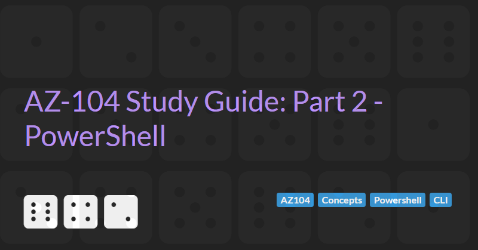

PowerShell and the CLI
The AZ-104: Azure Administrator Associate certification requires subject matter expertise in implementing, managing, and monitoring an organization's Microsoft Azure environment, including virtual networks, storage, compute, identity, security, and governance.
In part 2 of the guide we will cover PowerShell and the Azure CLI.
Azure Resources
There are 3 main ways to access resources in Azure:
- Azure Portal
- PowerShell
- Bash / CLI
Scripting is used to automate Azure and reliably replicate manual tasks. Scripts can be added to source control so we can monitor changes over time and act as a form of living documentation.
Azure Cloud Shell
Azure Cloud Shell is a command line shell built into the Azure Portal an accessible via the [>_] icon at the top of the portal. The Azure Cloud Shell requires a storage account to be created to store scripts etc. This storage account is created automatically when the Cloud Shell is first accessed.
Predictable CLI / CommandLets
Most CLI commands follows a predictable format:
- All commands start with "az"
- The second part of the command relates to the resource/service type ("vm", "keyvault", "network vnet" etc.)
- The third part of the command is the verb/action ("list", "create", "delete" etc.)
Most PowerShell commands follow a similar predictable format:
- The first part of the command is the verb/action ("Get-", "New-", "Remove-" etc.)
- The second part is "Az"
- The third part of the command is the relates to the resource/service type ("Get-AzVM", "New-AzKeyVault" etc.)
Setting up PowerShell locally
- Check what version of PowerShell you have installed by running PowerShell and executing the
$PSVersionTablecommand. - Version 7.2.5 is the latest version (as of 9th August 2022). To upgrade you can run either of the following commands (depending on your preferred command line package manager):
choco install powershell-corewinget upgrade Microsoft.PowerShell
- Restart Windows Terminal (if using) and change the Default profile to
PowerShellto use PowerShell 7 by default. - Install the Azure PowerShell module by executing the command
Install-Module -Name Az -AllowClobber -Repository PSGallery -Force(theAllowClobberparameter allows upgrades to overwrite previous versions, theForceparameter should only be required when upgrading between major version releases) - Uninstall any legacy
AzureRMmodule with the commandUninstall-AzureRm. - Check the installed versions of the Az module using the command
Get-InstalledModule -Name Az -AllVersions | Select-Object -Property Name, Version - Execute the
Connect-AzAccountcommand to connect to your subscription.
Switching between subscriptions
- Login to any subscription (see above)
- Execute the command
Get-AzSubscriptionto list all the available subscriptions - Create a
$contextvariable by executing the command$context = Get-AzSubscription -SubscriptionId <One of your subscription ids> - Set the context for the PowerShell session by executing the command
Set-AzContext $context